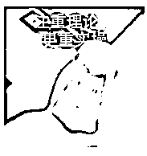

来源：https://e0d1s6n90do.feishu.cn/docx/Glf4dOmSjo6T9SxM6hzcW5llnie
大家好，我是糖糖。
恭喜你挖到宝藏，我们或是线上素未谋面的朋友，或是线下相识已久的老友，如论如何，在这里遇见，都是一种缘分。
几个标签快速认识下我
1.深耕销售15年的我， 一直都是公司销冠
2.前上市公司女装运营，5年销售1个亿
3.和朋友创业， 3年开9家实体店
4.最快一次，在留学公司3个月做300万
今天，我把15年销售的心得体会+实战经验毫无保留的分享给你，相信我掌握后，你就是下一个销冠
本文共9571字
花了两个星期整理
结合我自己的实战经验
同时和玩赚创始人芷蓝探讨了40个小时，才总结出来
内容将分成以下3部分
以前我是听很多人说：内向，不爱开口说话，滴酒不沾，是不是就干不了销售？
我想跟你说，确实有些人天生就会做销售，有些人就不适合，很有意思，我就不属于这类人，曾经我也以为我跟销售就是八字不合。
拍拍我，看看有多少人跟我有同感的
但别急，我要说的是，这些所谓的“缺点”，其实根本不妨碍你成为销售届的一匹黑马，
为啥呢？因为销售这门技能，它根本不是天生的，是可以学习的，是有方法论的。
这说明什么呢？说明只要掌握正确的方法，加上那么一点点的努力，你也能凭销售赚到属于你的10万100万，甚至1000万。
我给你说下我的故事，你就明白了，
在2021年口罩期间关闭了11家服装实体店，去了一家留学公司从小白做起，刚开始打电话话都不敢说，约了客户来机构面谈还要领导帮忙谈，干1年做了1000万业绩，相当于部门2个老员工的业绩。
所以如果现在你或你身边的人，否定你不适合做销售，请你记得糖糖曾经就是不适合的人，但是通过一套有效的训练方法，一样拿了销冠。
我总结了过去的销售经验，你可以从三个方面去思考：
第一：原动力
首先，你要扪心自问：为啥要干销售？
我呢，坦白说，就是为了追求更好的生活，说白了就是想多赚点钱，我相信大多数人都是这样。
别害羞，谈钱不丢人，没钱才丢人呢！想想看，星辰大海虽美，那也得先买得起门票不是？
所以当你确定了身上这个叫“原动力”的东西，每天叫醒你的就不再是冰冷冷的闹钟，而是那团火辣辣的梦想。
第二、自我激励的能力
做销售，被客户拒绝就是家常便饭， 前一位客户一记“闷棍”把你打回原形，你得拍拍尘土，调整情绪，下一秒还得精神抖擞的迎接下一位客户。
所以自我激励这玩意说起来简单，但做起来难，但却是你最应该拥有的一项超能力。
如何自我激励，在销售心态篇“销售总是被客户拒绝，该怎么调整”，里面全是干货满满的练习方法。
第三、自我学习的能力
销售里的专业知识，翻来覆去就那点，个把月的时间，你就能学个七七八八。
更重要的是你得知道客户喜欢啥，然后你就得学啥！
要想和客户聊得来，得到他们的尊重，你就得时刻保持和客户在思想和认知上的对等。就比如说客户喜欢打羽毛球，至少你得熟悉装备、技术动作之类的，这样你才能跟上他们的节奏。
可能你会问：“糖糖，要是这些素养我都没有，我还适合做销售吗？
”别急，别焦虑，告诉你，这些都是可以通过训练来提升的。
我们只需要有清晰的自我觉知和评估，知道自己擅长什么，不擅长什么。哪里不行，就及时去补哪里。没有所谓的适合不适合，只有你愿不愿意努力去突破自己。
你有没有碰到过这样的尴尬局面：你想要得到客户的信任，可总感觉他那扇门总是半掩半开，对你满是疑虑；
你想要和客户交个朋友，结果却发现，你们的关系始终停留在买卖层面。
那么，是什么阻挡了你和客户的关系进一步发展呢？
直白点的，给客户发红包、送礼、跑腿、陪聊……
你都都知道的，前几招，成本高得吓人，效果嘛，也就那么回事儿。
再比如说，你为客户两肋插刀办了不少事情，人家可能表示很感动，但你俩聊天就像隔着银河，只能停留在“你是个好人”的层面上。
如果你用好了“聊天”这把万能钥匙，不仅能弥补其他方面的短板，还能让客户越来越喜欢你，信任你。为啥？
因为聊得好，能让人心情舒畅，让客户觉得和你聊天就像找到了知音，自然就想和你深交。
聊天的本质，其实就是自我暴露、交换秘密、建立联系的过程。
但你要清醒：客户的自我暴露对你来说是把把双刃剑。
比如：
你敞开心扉，客户如果认可，那你们之间的关系就能迅速升温。
但如果客户对你的自我暴露不买账，那你的真心可能就要受伤了。
有的人会因为一两次冷水就把自己冰封起来，安全感降低了，那么和别人深度建立连接的可能性就很小
相反，如果一个人对别人的安全度较高，那么他会更多的自我流露，很容易和你敞开心扉。
这样你理解了之后，一个好的聊天，就是你要给客户创造一个安全的环境，让他的自我暴露不会受到批评否定，这样自然就会愿意跟你分享。
当客户愿意跟你敞开心扉聊天的时候，信任自然而然就建立起来了，有了信任，你还愁卖不出去东西么？
销售过程中的“自我暴露”其实分好几个层次，看看怎么把握这个度，让客户对你敞开心扉。
（1）打招呼 —— 最安全的社交开场白，销售中建立联系的基本动作
打招呼时，咱们几乎不用暴露啥，比如：“早上好！”、“欢迎你！”、“幸会！”之类的。但别小看这打招呼，它可是聊天的敲门砖。
（2）聊事情 —— 最基本的交流形式，销售过程中同步双方信息
聊事情，就是说些实实在在的事儿，比如产品信息、服务流程等。这阶段，自我暴露不多，主要是传递信息。通过聊事情，人就开始发现自己的诉说欲，满足了和人说话的一种需求。
给你一招让对方倾述的方法，你要表现出对客户话题的好奇心。
在你的好奇中，对方就能感觉到，没有批判，感觉是被接纳，被重视的
在好奇当中，客户会更加倾向讲自己的故事
很多时候客户讲着讲着就讲嗨了，甚至会把需求主动讲给你，那么你根据他的需求对症下药，成交是不是就更容易了？
你要表现出好奇的方法就是，在客户陈述以后给他加一句
为什么呢
是什么呀
后来怎么样了
能具体说一下刚才那个点
当时到底发生了什么呀.....等等。
（3）聊观点 —— 共情是销售中信任建立的标志
这个阶段，你开始表达自己的观点，客户也能感受到你的专业性和真诚，信任感开始慢慢建立，你和客户的亲密度又递进了一个等级，这时你可千万要珍惜客户对你的袒露。
你对客户的接纳和认同，会让他对你袒露更多事情
举个例子：
比如客户跟你聊天的时候，她说：好像我家孩子天生就不爱学习
如果这时，你给她的是否定的回应，是吗，小孩子哪有天生不爱学习的，是不是你没有陪伴好？
那对方自我暴露马上就会关闭，跟你的关系在那一刻就拉远一步。
加入你在是在肯定她的回应:
是呀，现在孩子真是都不爱学习，然后第二天，她还在在给孩子找机构补课学习，你就尴尬了。
正确反应是认可她的情绪，比方说：
喔，我特别理解您现在这种心情，孩子这种情况会让人着急。
你这样说既不会胡乱认同客户一时着急吐露出的观点，也不会敌对她的观点，引起她的不适。
（4）聊感受 —— 更接近客户的内心，挖掘需求的最佳方式
聊感受，就是把你的个人情感带入到聊天中，让客户感受到你的同理心，这样你们的关系就更近了一步。
对方开始开始表达感受了
我很生气，
我很恐惧，
我很害怕，
我很伤心，
或者说，太郁闷了
举个例子
当一位妈妈在无助的时候，有两种倾诉的方式：
（1）孩子期末考得太差了，傻子都不会错那么多的。
（2）孩子期末考得太差了，我真的是很生气，很郁闷呀。
你也看到了吧，第二种诉说情绪更容易从难过的状态中走出来，第一种发泄端口是被堵住了，第二种是表达事实和情绪，这种感受是被倾诉出来。
同时，你要这样回应
看来孩子确实让你感到很伤心，这时她会感觉很亲切，觉得你是站她同一立场，愿意向你吐槽更多事情，并且同时表达内心需求。
这就你做了很好的共情，她心里就会觉得，“哇，你真的好懂我呀”。那么产生信任或成为朋友，就自然而然的事情。
（5）聊缺点 —— 客户已经对你敞开心扉
如果你可以跟一个人聊你最不喜欢自己的部分，那你一定是信任她的。
比如说
一段不愿提起的往事
一个不好的习惯
你最难启齿的部分
想隐藏起来的隐私事件
其实每个人的内心深处都有自己不喜欢的地方，或者有些小秘密，都在默默的做过无数次的决定，想要改变成为更好的自己。
如果你能做到爱客户所不能爱他们的自己，并且能让他们感受到你的这份爱，那客户是不是就有勇气拿出来想你袒露了，这样你们的关系就铁得不能再铁了。
所以在客户感受到安全的前提下，多关心他们的故事，他们的看法，他们的感受，甚至是他们的小缺点。让他们感受到你的接纳和安全，鼓励他们大胆展示自己，你们的关系就能一步步走向深入。
相信我，只要你把我上面说的去揣摩感受，再运用到你实际跟客户的沟通中，这样你每次聊客户，就不会手忙脚乱不知聊什么了。

关键点有四个
第一、客户的基本情况、需求整理成文档
把客户的情况整理出来，这样你给客户强化一个印象：专业，而且会让人感受到尊重，你非常重视和对方的沟通，所以在跟你聊的过程中，也会对自己的输出和需求进行梳理审视。
和客户沟通后完，你把文档这样说：我刚才把您需求问题记录了，分别是1234，如果有遗漏的话，您可以提醒下我额。
第二、和客户沟通语言简洁要有重点
有些句话说得好，水深则流缓，人贵则语迟，
例如在微信上面沟通，一个段落不超过3行，连续发2段之后，客户没回复你，就要停下来。在微信聊天中，文字段落出现的越频繁，气场就弱，有来有回，气场反而越强，这里的慢不是有气无力，而是通过抑扬顿挫，有来有往，对重点问题重点强调加以阐述
第三、敢于让对话陷入沉默、停顿、留白，甚至小尴尬....
我觉得电影《肖申克的救赎》就不错......销售高手就是沟通高手
你有没有遇到过这种情况：跟客户聊天时你一停，空气突然变得很安静，超过2-3秒，气氛就像结冰了。对方可能就开始手足无措，觉得超级尴尬。
但记住了，尴尬这玩意儿，只要你自己不觉得，那尴尬的就是别人。所以，保持自信，适当的尴尬就是微微撩拨下甲方那种天然的优越心理。
第四、敢于对客户提要求
比如：
我能不能向你提个问题
刚才你说的那句，天气热了后面.....可以再讲一下吗，我听得不是很清楚
这不是没礼貌，而是要大胆地要回谈话主动权
这样做的好处是，展示了你的自信和决断力。客户会感觉到你不是来套信息陪聊的，而是来帮助自己解决问题。
客户说“考虑一下”，这其实是个烟雾弹，背后肯定藏着小九九。你的任务就是巧妙引导客户，把真正的原因表达出来。
给你两个思路：
一、引导客户说出真实原因
可能客户自己也迷糊，不知道是考虑什么。这时候，你可以真诚而平和的问：“给孩子找老师补课确实需要慎重考虑，不过我看你对我们的课程还是很有兴趣，不然也不会花那么多时间来考虑，你考虑的是课程效果还是课程费用，还是其他方面的问题呢 ”？
这么一问，客户很可能就会对你说出她的顾虑。一旦我们知道了异议，就能有的放矢，解决问题，成交也就顺理成章了。
二、如果客户在应付你，直接点破客户的借口
你可以这样说：浩然妈妈，一般说考虑考虑的不是应付我，就是真的有疑惑，您这么真诚，肯定不是应付我，而我这个人做事情比较实在干脆，不喜欢死缠烂打发信息骚扰，既然今天咱们聊得这么深入，直接告诉我，我们来一起解决。
销售中最能打动客户的不是花式技巧，而是真诚，你的真诚能换来对方的真诚，买不买都无所谓，关键是别拖长战线。
如果客户不是你的意向客户，那也别在他身上浪费太多时间。毕竟，我们销售的时间宝贵着呢，这可是无形的资产。
当客户说“最低多少”，你怎么回答？
您今天能定下来吗
我就是个顾问，我的权限就是这个价
我们是教育品牌连锁，全国统一价
这些回答，基本上就等于你在告诉客户：“你走吧，我不卖你了。”你这样间接拒绝，会让客户心里不爽，直接影响到成交。
如果你直接给客户降价，他们会觉得你这个报价水分太高，还会继续砍，砍到你怀疑人生。
那应该怎么做？
第一步，先共情
你可以这样回答
看得出来，xx妈妈，您真是会居家过日子的贤妻良母，每一分钱都是花在刀刃上。我们公司在价格上确实比较严格，灵活度不会特别高。
第二步，塑造产品价值
接着说
不过这也说明了我们公司管理规范，师资和课程质量有保障。
价格方面虽然不能动，但我可以跟孩子申请些赠品。您要觉得我这个人还靠谱，信我一次，我保证后续服务一定让您满意。
然后，迅速递上付款二维码，用期待的小眼神看着他您是微信支付还是微信支付。这样，犹豫的客户基本上就手到擒来了。
你有没有遇到，客户提问完后，你就接不住的尴尬
很多时候，客户一问你一答
客户问完之后就说了句：好的谢谢你，我再考虑考虑
然后基本就没有下文了
整个咨询过程一直被客户牵着鼻子走，客户提什么问题，你都想尽办法去找最合适的答案，最后客户还是觉得你的解答不够清晰，掏心掏肺都没用。
通过用两个步骤就可以反客为主，有效解决你的被动局面。
分享步骤之前，你想下为啥会被被客户跑过来的问题接不住，转而被拿捏了
首先，准备不充分
很多人知道访前准备很重要，但就是不知道准备啥。别急，我来给你三个锦囊妙计，让你在谈单时胸有成竹。
其次，思维习惯问题
客户一提问，你就不自觉地跟着回答。其实，你完全可以转守为攻，用反问来掌握主动。具体怎么反问，后面给大家举例分析
好了，明白了问题所在，接下来就是两个解决步骤
步骤一：谈单前准备
从三个维度着手：产品知识 市场知识 心理准备
Ⅰ产品知识准备
充分了解产品特点
不是让你把特点当卖点，而是要深入挖掘
比如说一位同学报了暑假数学思维课程，两个星期一共13次课程，这是产品情况说明而已，而不应该把这个当成一个卖点来使用，
分析产品优点
购买你的产品后，会得到什么样的效果，上了你们学校的数学思维课程之后，孩子会在思维方面得到什么样的提升，能获得哪些方面的启发
提炼产品利益点
这才是卖点，告诉客户，以前过往学习的孩子，在思维比赛拿到了的结果，用数学思维来解决生活方面的问题会更强等等。
通过你的描述，把客户带到学习场景中，这才是最能打动客户，让她为此买单的重要环节。
Ⅱ市场知识准备
了解竞争对手情况特点价格等，找出你的产品差异化优势，这样客户无论怎么比较，你都能自信地展示自己产品的价值。
客户不仅会觉得你很专业，在这个过程中被你说的心服口服，成交就掌握在你的手里了。
Ⅲ心理准备
你要莫名其妙的自信
相信你一出场必定能成交，哪怕你是新人，也不能露怯。情绪感染很重要，不够自信怎么办？在镜子前摆个超人的姿势，提升你的心理能量场。
有一本书《高能量姿势》，介绍了肢体语言影响我们的大脑和心理状态。
一个自信的，扩展性的姿势，就能够对我们的情绪和状态产生神奇的积极影响。借助简单的高能量姿势，可以帮助我们迅速调整出更好的状态，打造我们的强势心理。
步骤二：改变思维惯性，学会反问。
我们记住一个原理，谁提问，谁带节奏。要想不被客户牵着鼻子走，就得学会反问。
那你要说，客户问了问题，我能不回答吗
有些问题你当然可以不回答，但你要会用澄清客户的问题
举个例子：
客户问，你们这边有哪些适合3年级孩子学习的课程？
你回答，浩然妈妈，我们这边适合3年级孩子的课程有很多，但未必都是适合您家宝贝，具体看看宝贝需要提升哪一学科的知识，孩子目前学习情况是怎么样的？
看到吧，你不是不回答客户的问题，只是澄清客户的问题以后，通过反问去搜集客户的信息。
再举个例子：
客户问，你们家课程怎么都那么贵？
你回答，浩然妈妈，非常理解你有这样的想法，但你为什么会觉得我们的课程贵，你是对比过一些机构，还是觉得我们课程不值得呢，
你要把客户宽泛的问题进行具体化，具体的问题，就要了解他什么要这么问，这背后痛点是什么。
把客户问你的问题，变成你问客户的问题，让他说出自己心中的顾虑，就会变成你在带节奏。
当客户释放出购买信号，你如何迅速出击，一举拿下
这里有个杀手锏——假设成交法
什么是假设成交法？
一旦识别到客户的购买信号，你就先假设客户已经决定购买了，然后通过一系列递进问题，逐项敲定细节。
还是以孩子的课程为例子
根据客户购课的数量，学科，学习时间，学习地点，课程老师，支付方式，从压力小的到压力大的，逐步推进。
按照给客户的压力感，从小到大逐项往下敲定，这个方法让你的成交不显山不漏水，还又快又准。
好，你现在可以尝试模拟下场景
你说：浩然妈妈，暑假课你们在哪个校区上课比较方便？
客户：回复哪里
你说：好的，那我备注起来，你看上，1，2，3期，哪一期？
如果她说了时间，就可以再次确定课时
你说：你刚才是确定了廖老师的班级对吧？
客户：对
你说：那你是要20节的暑期课时包对吧
如果她继续回答你，大概率这单基本就稳了
注意：
如果客户在谈价格，即便之前已经谈好了，他现在又磨价格，你可别轻易让步。最多送点小礼品或服务，因为他内心已经决定买了，只是在最后争取一下。
如果客户在问送货地点和时间时停下来，说要问个问题，那就先解决他的问题，然后再继续你的推进策略。
为什么要这样？
因为成交前，客户内心会有种压力，一旦感受到压力，她可能会退缩或逃避。你通过逐步拆解压力来源部分，给客户一个缓冲，让她更容易接受。
告诉你一个销冠必杀技，一招鲜吃遍天的绝招——登门槛效应（又叫得寸进尺效应），屡试不爽，亲测有效
第一步、模糊承诺
例如，我之前做留学的一位客户，签约过程比较顺利
我就跟他说：李总，你看我给你推荐的学校还不错吧，你有空的时候，记得帮我介绍客户
他一口答应，但这话里90%都是客套，你得看实际行动。
第二步、三天后跟进
过了三天，我给他电话回访，正事讲完就寒暄起来：“李总，月底了哈，我这业绩还没达标呢。您上次说的帮我介绍客户，咋样了？
李总说：“别急，这两天忙，有空我想想。
这话你听着耳熟不？忙，有空想想，咱们得主动点。
第三步、送礼加码
又过了两天，我定了一箱水果，直接邮寄到他家里
李总：糖糖老师，你这也太客气了！
这时候得自来熟，我说：这是给我老妹的。
气氛一好，我就半开玩笑半认真：李总，我有点意见咯，您这不是忽悠我呢，说好的客户介绍呢？他说：我老婆一直想学习下企业管理课，这是我老婆电话，要不你打下。
第四步、请求帮忙
我接着说：李总，我这人害羞，您帮个忙，下次课程可以带老婆过来一起体验下
李总真给力：当天跟老婆敲定时间，周末带着孩子一家人过来
第五步、当面感谢
我连忙夸赞：李总，现在爱学习的企业家很多，像您们一家人来进修就不多了，给我们树立了榜样，今天学校刚好有清华大学经济管理学教授的课程，你们可以先了解下。李总老婆了解完，当场拍板签单了。
看见了没？这就是登门槛效应，从客户的一句模糊承诺出发，一步步发展成真实的转介绍，整个过程需要你持续跟进，不能放松。
你跟客户谈单，这过程就跟打怪升级一样，每次拒绝都是攒经验捡武器回血的过程
你怕被拒绝是因为内心能量不足，原因大致有三方面
过去有失败过经历
缺乏在这个行业的专业经验
自我否定，思维受限，无法激发自己潜能
那这些问题要怎么解决，给你三个锦囊妙计去用
（1）提升内心能量值
（2）重新看待客户的拒绝
对待同一件事情的看法不同，心态也会不一样
现在你去做这样一个工作
用笔和纸写下当时的沟通场景
客户冷淡地回复你“不需要”
转变对这个场景的解读
可能只是她今天心情不好，或是跟老公吵架了。别把客户的拒绝太当回事，它可能只是她当时的情绪反映。
客户对不了解的东西，第一反应往往是逃避。所以，拒绝可能只是他们的一种思维惯性，也是他需要进一步了解产品的正常反应。
所以你不要在意客户这类拒绝的话，你只要坚定信心，继续前进。
销售成交不是一蹴而就，从建立联系，同步信息，挖掘需求，解决顾虑，一直到成交，你走的每一步都可能遇到客户拒绝，但这些拒绝不会一直都在
你只要保持积极乐观的心态
准确挖掘到客户的真实需求，适当解释，所有的障碍都能克服。
销售的每一步的结果不是成交
而是顺利推进到下一步，你如果这样想，拒绝就会少很多
对待拒绝的豁达程度
证明了你对销售的领悟，销售这个职业的特殊性，在于遭遇拒绝的频率和猛烈程度远超其他行业，只有拥有良好的心态，才能成为销售高手。
对于销售来说，80%都是心态的问题，学会调整心态，就等于成功了一大半。
那么顶尖的销售高手应该拥有什么样的心态呢？
很多销售都会一种求人的心理，那是因为在你的内心深处，不清楚产品和你给客户提供的价值，感觉客户买你东西吃了很大的亏，你对不起他。
其实客户买了你的产品或找你服务，得到的价值和好处远远大于她付出的钱。如果你的客户没意识到，那就得靠你，销售大师去点醒他们。
所以你和客户之间是平等的合作关系，因为你是可以为客户解决问题的
如果你总是觉得在求人，那只能说明一个问题：
你还没有找到产品和服务的核心价值，还没把价值亮出来。
因此，这份工作并不是低下的职业，
更不必在销售中低声下气、卑微求人，
当你有一个正常的心态，你必定能在销售这份职业得到成功。
老话有说：“有志者，事竟成”。干销售，就得有股子不服输的劲儿。
这次拒绝你，不意味着下次还会拒绝你；
下次还拒绝，不代表客户拒绝这件事；
即使客户拒绝这件事情，也不代表拒绝你这个人。
因此，面对客户的拒绝，销售人员要坚定自己的信念，坚持不懈地寻找客户的“软肋”，然后一击即中，这才是一个成功的销售所必须的因素。
干销售，耳朵根子得硬。
客户的抱怨、领导的批评、同事的议论，对这些言论，你在乎则有，不在乎则无。
客户对你的态度，不会完全决定你的销售结果，这取决于你的销售方式。
人一旦情绪化，能力发挥就会大打折扣，业绩自然就受影响。
所以，心态得好，风轻云淡，宠辱不惊。把心理包袱一扔，轻松上阵
你的心态是什么样，你取得的业绩就是什么样的，所以摆正心态，找准状态。
总结一下，做好销售需要做到这几点：
你要保持良好的学习能力，不断提升自己的认知，你才能跟各行各业的人聊到一块
坚持到底，永不放弃，也许再坚持一下，客户就可以成交了
状态对了，事情就能办成了。
分享完了，感谢你认真看到现在，善良认真的你让我多收获一份认可
我是糖，一个愿意陪你一起变优秀的成交教练。
感谢颜乐乐，辅助我做了方向梳理，让我有精力去做更需要我，更能为自己带来长期利益的事。
感谢驿涵，手把手教我做基础搭建，文案改写，社群冷启动，推我做了一件想做很久都没勇气做的事情。
感谢芷蓝，当我说要推进下一步社群流程的时候，给我方向，帮助我立了本文框架，辅助我写初这篇复盘。
感谢靠谱，在我迷茫的时候，让我找到自己的优势，从经验和已获得中出发。
感谢王司基，我在5月加入玩赚合伙人时，就给我清晰的定位，并给予各个不同维度的执行方法论，还有在合伙人群里的分享，让从来没有战略思维的我，突然有了新的认知。